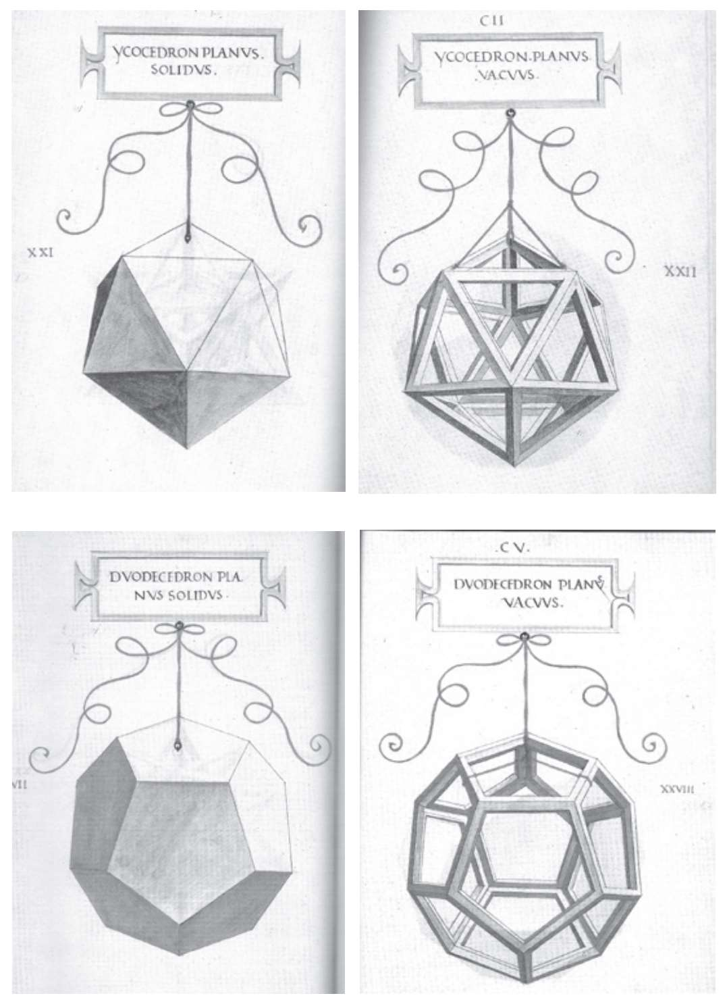
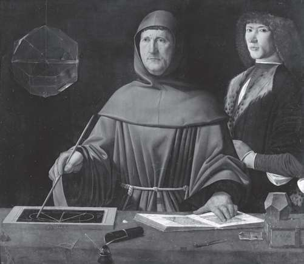

卢卡·帕乔利成长于15世纪的意大利。他和列奥纳多·达·芬奇将黄金比例引入到了美与艺术的概念中。《神圣比例》写于1498年末，帕乔利在该书中将黄金比例与美联系到了一起。几年后的1509年，他又完成了三部作品，并最终在威尼斯出版。《论建筑》（De Architectura）就是受罗马建筑师维特鲁威的著作《建筑十书》启发，帕乔利在此书中讨论了建筑设计中的黄金比例。
《神圣比例》反映了几何的本质，严格确立了符合美感的比例。这本书包含了六十幅多面体插图，人们普遍认为这些插图出自大师达·芬奇之手，其中包括根据黄金比例绘制的《维特鲁威人》（Vitruvian Man）。从那以后，许多画家仿照这幅著名的插图进行再创作，留下了数不尽的绘画作品。因此在西方文化史上，《神圣比例》一书为某些极具影响力的艺术作品提供了必要的创作素材。文艺复兴时期的意大利，具有创造性的自由思想家，包括画家、建筑师、数学家、哲学家，即将为欧洲的历史和艺术开辟一片新的天地。

列奥纳多·达·芬奇绘制的多面体插图（从左上图按顺时针方向依次为）：实心正二十面体、空心正二十面体、空心正十二面体、实心正十二面体。
卢卡·帕乔利（1445—1517）
1445年，卢卡·帕乔利出生于圣塞波尔克罗，这里也是画家皮耶罗·德拉·弗朗切斯卡（1412—1492）的故乡，帕乔利首先从他那里学习了艺术和数学，随后前往威尼斯生活和学习。后来受建筑师莱昂·巴蒂斯塔·阿尔伯蒂（1404—1472）的邀请搬到了罗马，在那里成为方济会的修道士。他曾在不同的大学担任数学教授，后来进入了米兰公爵卢多维科·斯福尔扎的宫廷。正是这里的一次偶遇创造了历史：帕乔利遇见了列奥纳多·达·芬奇，据说《神圣比例》中的很多多面体插图都是由达·芬奇所画。
1494年意大利战争爆发，法国占领米兰之后，帕乔利前往意大利最重要的比萨大学、罗马大学、博洛尼亚大学，与意大利著名的代数学家希皮奥内·德尔·费罗（1465—1526）进行学术交流。费罗曾与一位匿名同事合作对一种只有三项的三次方程求解。
帕乔利不仅写成了《神圣比例》，此外，他还凭借过人的天赋完成了《算术、几何、比及比例概要》（Aritmética,Geometria，Proportioni et Proportionalità），这是一部超过六百页的百科全书，1494年在威尼斯出版。他在该书中断言，“如果没有按照适当的比例建造教堂，宗教仪式几乎没有价值”，他以此提出了建筑设计中比例的重要性。
下页图是卢卡·帕乔利的肖像画，1495年由雅各布·德巴尔巴里绘制，存于那不勒斯的卡波迪蒙特博物馆。画中，帕乔利身穿方济会长袍，正在教授年轻的乌尔比诺公爵学习欧几里得几何。两人周围摆放着多面体和几何工具。帕乔利的右手边挂着装了一些水的菱方八面体。1517年，卢卡·帕乔利在自己的家乡去世。比例。这本书包含了六十幅多面体插图，人们普遍认为这些插图出自大师达·芬奇之手，其中包括根据黄金比例绘制的《维特鲁威人》（Vitruvian Man）。从那以后，许多画家仿照这幅著名的插图进行再创作，留下了数不尽的绘画作品。因此在西方文化史上，《神圣比例》一书为某些极具影响力的艺术作品提供了必要的创作素材。文艺复兴时期的意大利，具有创造性的自由思想家，包括画家、建筑师、数学家、哲学家，即将为欧洲的历史和艺术开辟一片新的天地。

卢卡·帕乔利的肖像画，雅各布·德巴尔巴里绘。